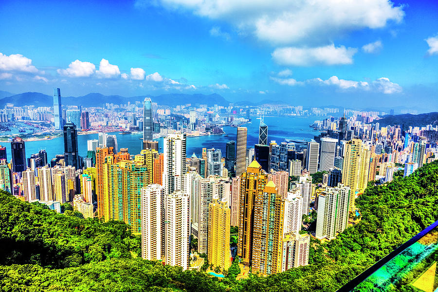
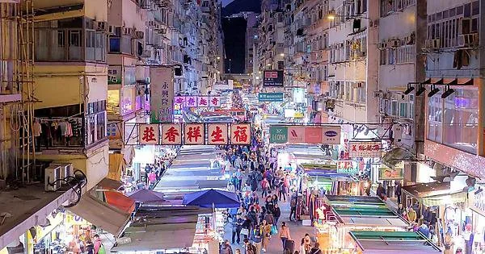

Victoria Peak, ou simplement "The Peak", est l'une des attractions les plus emblématiques de Hong Kong. Situé sur l'île de Hong Kong, c'est le point culminant de la ville, offrant une vue imprenable sur les gratte-ciel scintillants, la baie de Victoria et les îles environnantes. Les visiteurs peuvent accéder au sommet en empruntant le célèbre Peak Tram, un tramway historique qui grimpe en pente raide à travers une végétation luxuriante. Une fois au sommet, vous pouvez profiter de panoramas à couper le souffle depuis les plateformes d'observation, faire des promenades pittoresques le long des sentiers, ou vous détendre dans les restaurants et les boutiques du complexe commercial de Peak Tower. C'est un incontournable pour tous ceux qui visitent Hong Kong, offrant une perspective incomparable sur la ville dynamique et son environnement naturel spectaculaire.

Le Ladies' Market, ou Marché des dames, est l'un des marchés de rue les plus animés et les plus célèbres de Hong Kong. Situé dans le quartier dynamique de Mong Kok à Kowloon, ce marché est réputé pour sa grande variété de produits vendus à des prix abordables. Les visiteurs peuvent parcourir des stands colorés proposant une multitude d'articles, notamment des vêtements, des accessoires de mode, des gadgets électroniques, des souvenirs et bien plus encore. C'est un endroit idéal pour faire des achats intéressants, pratiquer le marchandage avec les vendeurs et découvrir l'ambiance animée de la vie quotidienne à Hong Kong.
